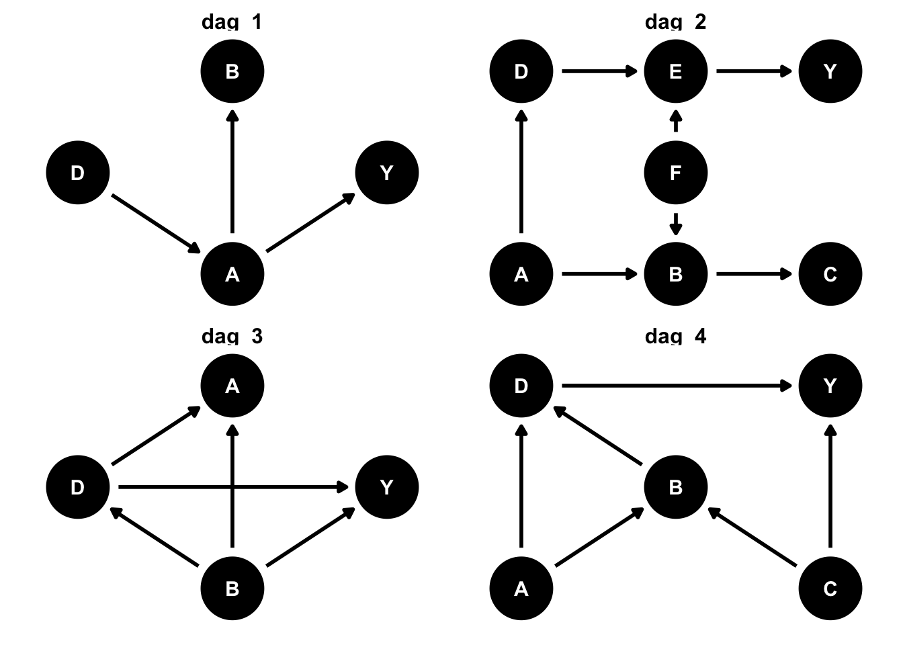

In today’s lab, you’ll practice working with DAGs and building a causal workflow.
Learning goals
By the end of the lab you will…
Be able to build DAGs to model causal assumptions and use the causal model to extract implications for answering causal questions.
Be able to build a causal workflow to answer causal questions.
Getting started
Log in to your github account and then go to the GitHub organization for the course and find the BSMM-lab-7-[your github username] repository to complete the lab.
Create an R project using your BSMM-lab-8-[your github username] repository (remember to create a PAT, etc., as in lab-1) and add your answers by editing the BSMM-lab-8.qmd file in your repository.
When you are done, be sure to: save your document, stage, commit and push your work.
Important
To access Github from the lab, you will need to make sure you are logged in as follows:
username: .\daladmin
password: Business507!
Remember to (create a PAT and set your git credentials)
create your PAT using usethis::create_github_token() ,
# check if 'librarian' is installed and if not, install itif (!"librarian"%in%rownames(installed.packages()) ){install.packages("librarian")}# load packages if not already loadedlibrarian::shelf( tidyverse, broom, rsample, ggdag, causaldata, halfmoon, ggokabeito, magrittr, ggplot2, r-causal/propensity)
Warning: package 'broom' was built under R version 4.3.3
# library(tidyverse)# library(broom)# library(rsample)# library(ggdag)# library(causaldata)# library(halfmoon)# library(propensity)# library(ggokabeito)# library(magrittr) # the pipe# library(ggplot2) # for plotting# set the efault theme for plottingtheme_set(theme_bw(base_size =18) +theme(legend.position ="top"))
Exercise 1: DAGs and open paths
Find the open paths from D (treatment) to Y (outcome) in the four DAGs below.
You can examine the DAGS to identify (this is the recommended first step) and then use the code for the DAGs (in your repo), along with the function dagitty::paths to confirm

YOUR ANSWER:
DAG_1
open paths:
DAG_2
open paths:
DAG_3
open paths:
DAG_4
open paths:
Exercise 2: Building a DAG
You work for a company that sells a commodity to retail customers, and your management is interested in the relationship between your price and the demand for the commodity at your outlets. You have one competitor and your pricing tactic is to set your price at slightly less that your competitor’s. Your company surveys the competitors prices several times per day and once you know the competitor’s price, the pricing team resets your prices according to the pricing tactic. The public is well informed of both prices when they make their choice to buy.
You and your competitor buy from the wholesaler at a price that is set by the global market, and the wholesaler’s price is reset at the beginning of the each day according to the market price at the end of the day before. As the market is traded globally it reflects global demand for the commodity as well as other global and local economic shocks that you customers might be exposed to (interest rates, general business conditions, wages, etc.).
Your company has data on its prices, competitor prices and sales, and has asked you to do an analysis of the pricing tactics to increase demand.
To confirm your understanding of the business, perhaps identify missing data, and to inform your analysis, create a DAG describing the assumed relationships between the driving factors for this problem.
What data might be missing from dataset provided by the company?
In this guided exercise, we’ll attempt to answer a causal question: does quitting smoking make you gain weight? Causal modeling has a special place in the history of smoking research: the studies that demonstrated that smoking causes lung cancer were observational. Thanks to other studies, we also know that, if you’re already a smoker, quitting smoking reduces your risk of lung cancer. However, some have observed that former smokers tend to gain weight. Is this the result of quitting smoking, or does something else explain this effect? In the book Causal Inference by Hernán and Robins, the authors analyze this question using several causal inference techniques.
To answer this question, we’ll use causal inference methods to examine the relationship between quitting smoking and gaining weight. First, we’ll draw our assumptions with a causal diagram (a directed acyclic graph, or DAG), which will guide our model. Then, we’ll use a modeling approach called inverse probability weighting–one of many causal modeling techniques–to estimate the causal effect we’re interested in.
We’ll use data from NHEFS to try to estimate the causal effect of quitting smoking on weight game. NHEFS is a longitudinal, observational study that has many of the variables we’ll need. Take a look at causaldata::nhefs_codebook if you want to know more about the variables in this data set. These data are included in the {causaldata} package. We’ll use the causaldata::nhefs_complete data set, but we’ll remove people who were lost to follow-up.
There’s a difference–former smokers do seemed to have gained a bit more weight–but there’s also a lot of variation. Let’s look at the numeric summaries.
# ~4.5 kg gained for quit vs. not quitnhefs_complete_uc |> dplyr::group_by(qsmk) |> dplyr::summarize(mean_weight_change =mean(wt82_71), sd =sd(wt82_71),.groups ="drop" )
Here, it looks like those who quit smoking gained, on average, 4.5 kg. But is there something else that could explain these results? There are many factors associated with both quitting smoking and gaining weight; could one of those factors explain away the results we’re seeing here?
To truly answer this question, we need to specify a causal diagram based on domain knowledge. Sadly, for most circumstances, there is no data-driven approach that consistently identify confounders. Only our causal assumptions can help us identify them. Causal diagrams are a visual expression of those assumptions linked to rigorous mathematics that allow us to understand what we need to account for in our model.
In R, we can visualize and analyze our DAGs with the {ggdag} package. {ggdag} uses {ggplot2} and {ggraph} to visualize diagrams and {dagitty} to analyze them. Let’s set up our assumptions. The dagify() function takes formulas, much like lm() and friends, to express assumptions. We have two basic causal structures: the causes of quitting smoking and the causes of gaining weight. Here, we’re assuming that the set of variables here affect both. Additionally, we’re adding qsmk as a cause of wt82_71, which is our causal question; we also identify these as our outcome and exposure. Finally, we’ll add some labels so the diagram is easier to understand. The result is a dagitty object, and we can transform it to a tidy_dagitty data set with tidy_dagitty().
# set up DAGsmk_wt_dag <- ggdag::dagify(# specify causes of quitting smoking and weight gain: qsmk ~ sex + race + age + education + smokeintensity + smokeyrs + exercise + active + wt71, wt82_71 ~ qsmk + sex + race + age + education + smokeintensity + smokeyrs + exercise + active + wt71,# specify causal question:exposure ="qsmk", outcome ="wt82_71",coords = ggdag::time_ordered_coords(),# set up labels:# here, I'll use the same variable names as the data set, but I'll label them# with clearer nameslabels =c(# causal question"qsmk"="quit\nsmoking","wt82_71"="change in\nweight",# demographics"age"="age","sex"="sex","race"="race","education"="education",# health"wt71"="baseline\nweight","active"="daily\nactivity\nlevel","exercise"="exercise",# smoking history"smokeintensity"="smoking\nintensity","smokeyrs"="yrs of\nsmoking" )) |> ggdag::tidy_dagitty()smk_wt_dag
What do we need to control for to estimate an unbiased effect of quitting smoking on weight gain? In many DAGs, there will be many sets of variables–called adjustment sets–that will give us the right effect (assuming our DAG is correct–a big, unverifiable assumption!). ggdag_adjustment_set() can help you visualize them. Here, there’s only one adjustment set: we need to control for everything! While we’re add it, since a {ggdag} plot is just a {ggplot2} plot, let’s clean it up a bit, too.
Let’s fit a model with these variables. Note that we’ll fit all continuous variables with squared terms, as well, to allow them a bit of flexibility.
lm( wt82_71~ qsmk + sex + race + age +I(age^2) + education + smokeintensity +I(smokeintensity^2) + smokeyrs +I(smokeyrs^2) + exercise + active + wt71 +I(wt71^2), data = nhefs_complete_uc) |> broom::tidy(conf.int =TRUE) |> dplyr::filter(term =="qsmk")
When we adjust for the variables in our DAG, we get an estimate of about 3.5 kg–people who quit smoking gained about this amount of weight. However, we are trying to answer a specific causal question: how much weight would a person gain if the quit smoking vs. if the same person did not quit smoking? Let’s use an inverse probability weighting model to try to estimate that effect at the population level (what if everyone quit smoking vs what if no one quit smoking).
For a simple IPW model, we have two modeling steps. First, we fit a propensity score model, which predicts the probability that you received a treatment or exposure (here, that a participant quit smoking). We use this model to calculate inverse probability weights–1 / your probability of treatment. Then, in the second step, we use this weights in the outcome model, which estimates the effect of exposure on the outcome (here, the effect of quitting smoking on gaining weight).
For the propensity score model, we’ll use logistic regression (since quitting smoking is a binary variable). The outcome is quitting smoking, and the variables in the model are all those included in our adjustment set. Then, we’ll use augment() from {broom} (which calls predict() on the inside) to calculate our weights using propensity::wt_ate() and save it back into our data set.
propensity_model <-glm( qsmk ~ sex + race + age +I(age^2) + education + smokeintensity +I(smokeintensity^2) + smokeyrs +I(smokeyrs^2) + exercise + active + wt71 +I(wt71^2), family =binomial(), data = nhefs_complete_uc)nhefs_complete_uc <- propensity_model |># predict whether quit smoking broom::augment(type.predict ="response", data = nhefs_complete_uc) |># calculate inverse probability dplyr::mutate(wts = propensity::wt_ate(.fitted, qsmk))nhefs_complete_uc |> dplyr::select(qsmk, .fitted, wts)
Let’s look at the distribution of the weights.
ggplot(nhefs_complete_uc, aes(wts)) +geom_histogram(color ="white", fill ="#E69F00", bins =50) +# use a log scale for the x axisscale_x_log10() +theme_minimal(base_size =20) +xlab("Weights")
It looks a little skewed, particularly that there are some participants with much higher weights. There are a few techniques for dealing with this–trimming weights and stabilizing weights–but we’ll keep it simple for now and just use them as is.
The main goal here is to break the non-causal associations between quitting smoking and gaining weight–the other paths that might distort our results. In other words, if we succeed, there should be no differences in these variables between our two groups, those who quit smoking and those who didn’t. This is where randomized trials shine; you can often assume that there is no baseline differences among potential confounders between your treatment groups (of course, no study is perfect, and there’s a whole set of literature on dealing with this problem in randomized trials).
Standardized mean differences (SMD) are a simple measurement of differences that work across variable types. In general, the closer to 0 we are, the better job we have done eliminating the non-causal relationships we drew in our DAG. Note that low SMDs for everything we adjust for does not mean that there is not something else that might confound our study. Unmeasured confounders or misspecified DAGs can still distort our effects, even if our SMDs look great!
We’ll use the {halfmoon} package to calculate the SMDs, then visualize them.
vars <-c("sex", "race", "age", "education", "smokeintensity", "smokeyrs", "exercise", "active", "wt71")plot_df <- halfmoon::tidy_smd( nhefs_complete_uc,all_of(vars), qsmk, wts)ggplot(data = plot_df,mapping =aes(x =abs(smd), y = variable, group = method, color = method)) + halfmoon::geom_love()
These look pretty good! Some variables are better than others, but weighting appears to have done a much better job eliminating these differences than an unadjusted analysis.
We can also use halfmoon’s geom_mirror_histogram() to visualize the impact that the weights are having on our population.
Both groups are being upweighted so that their distributions of propensity scores are much more similar.
We could do more here to analyze our assumptions, but let’s move on to our second step: fitting the outcome model weighted by our inverse probabilities. Some researchers call these Marginal Structural Models, in part because the model is marginal; we only need to include our outcome (wt82_71) and exposure (qsmk). The other variables aren’t in the model; they are accounted for with the IPWs!
This estimate is pretty similar to what we saw before, if a little smaller. In fact, for simple causal questions, this is often the case: adjusting for confounders directly in your regression model sometimes estimates the same effect as IPWs and other causal techniques. Causal techniques are special, though, in that the use counterfactual modeling, which allows you to deal with many circumstances, such as when you have selection bias or time-dependendent confounding. They also often have variance properties.
But we have other problem that we need to address. While we’re just using lm() to estimate our IPW model, it doesn’t properly account for the weights. That means our standard error is too small, which will artificially narrow confidence intervals and artificially shrink p-values. There are many ways to address this, including robust estimators. We’ll focus on using the bootstrap via the {rsamples} package in this workshop, but here’s one way to do it with robust standard errors:
# also see robustbase, survey, gee, and otherslibrary(estimatr)ipw_model_robust <-lm_robust( wt82_71 ~ qsmk, data = nhefs_complete_uc, weights = wts ) ipw_estimate_robust <- ipw_model_robust |> broom::tidy(conf.int =TRUE) |> dplyr::filter(term =="qsmk")ipw_estimate_robust
Now let’s try the bootstrap. First, we need to wrap our model in a function so we can call it many times on our bootstrapped data. A function like this might be your instinct; however, it’s not quite right.
# fit ipw model for a single bootstrap samplefit_ipw_not_quite_rightly <-function(split, ...) {# get bootstrapped data sample with `rsample::analysis()` .df <- rsample::analysis(split)# fit ipw modellm(wt82_71 ~ qsmk, data = .df, weights = wts) |>tidy()}
The problem is that we need to account for the entire modeling process, so we need to include the first step of our analysis – fitting the inverse probability weights.
fit_ipw <-function(split, ...) { .df <- rsample::analysis(split)# fit propensity score model propensity_model <-glm( qsmk ~ sex + race + age +I(age^2) + education + smokeintensity +I(smokeintensity^2) + smokeyrs +I(smokeyrs^2) + exercise + active + wt71 +I(wt71^2), family =binomial(), data = .df )# calculate inverse probability weights .df <- propensity_model |> broom::augment(type.predict ="response", data = .df) |> dplyr::mutate(wts = propensity::wt_ate( .fitted, qsmk, exposure_type ="binary" ))# fit correctly bootstrapped ipw modellm(wt82_71 ~ qsmk, data = .df, weights = wts) |>tidy()}
{rsample} makes the rest easy for us: bootstraps() resamples our data 1000 times, then we can use purrr::map() to apply our function to each resampled set (splits). {rsample}’s int_*() functions help us get confidence intervals for our estimate.
# fit ipw model to bootstrapped samplesipw_results <- rsample::bootstraps(causaldata::nhefs_complete, 1000, apparent =TRUE) |> dplyr::mutate(results = purrr::map(splits, fit_ipw))# get t-statistic-based CIsboot_estimate <- rsample::int_t(ipw_results, results) |> dplyr::filter(term =="qsmk")boot_estimate
Let’s compare to our naive weighted model that just used a single estimate from lm()
dplyr::bind_rows( ipw_estimate |> dplyr::select(estimate, conf.low, conf.high) |> dplyr::mutate(type ="ols"), ipw_estimate_robust |> dplyr::select(estimate, conf.low, conf.high) |> dplyr::mutate(type ="robust"), boot_estimate |> dplyr::select(estimate = .estimate, conf.low = .lower, conf.high = .upper) |> dplyr::mutate(type ="bootstrap")) |># calculate CI width to sort by it dplyr::mutate(width = conf.high - conf.low) |> dplyr::arrange(width) |># fix the order of the model types for the plot dplyr::mutate(type = forcats::fct_inorder(type)) |>ggplot(aes(x = type, y = estimate, ymin = conf.low, ymax = conf.high)) +geom_pointrange(color ="#0172B1", size =1, fatten =3) +coord_flip() +theme_minimal(base_size =20) +theme(axis.title.y =element_blank())
Our bootstrapped confidence intervals are wider, which is expected; remember that they were artificially narrow in the naive OLS model!
So, we have a final estimate for our causal effect: on average, a person who quits smoking will gain 3.5 kg (95% CI 2.4 kg, 4.4 kg) versus if they had not quit smoking.
Questions:
Please enumerate the steps in the causal analysis workflow
What do you think? Is this estimate reliable? Did we do a good job addressing the assumptions we need to make for a causal effect, particularly that there is no confounding? How might you criticize this model, and what would you do differently?
Your Answer
causal workflow steps:
your critique of the results of the exercise
Submission
Warning
Before you wrap up the assignment, make sure all documents are saved, staged, committed, and pushed to your repository on the course github site.
Remember – you do not have to turn in an *.html file. I will be pulling your work directly from your repository on the course website.